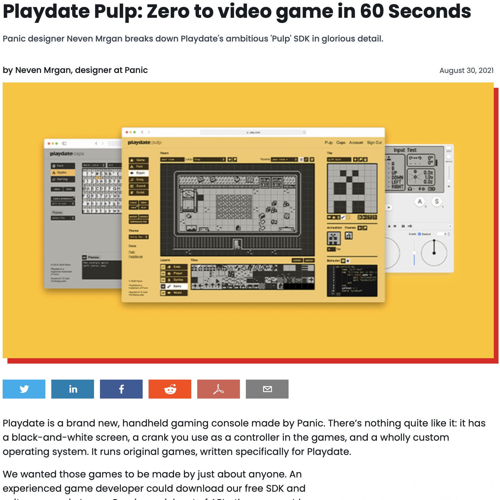

Playdate Pulp
Perma🔗 (via @shauninman)

I'm a fan of Panic, and Shaun Inman. I've preordered a Playdate, but have also enjoyed watching this process unfold. I don't anticipate I'll get really into game development, but I'll surely tinker around with it, to try to appreciate what they've made. The system comes out later this year, but one of these screenshots is timestamped from 2013 - it's been a longer process than I could have imagined before.
- Prior: Follow Him